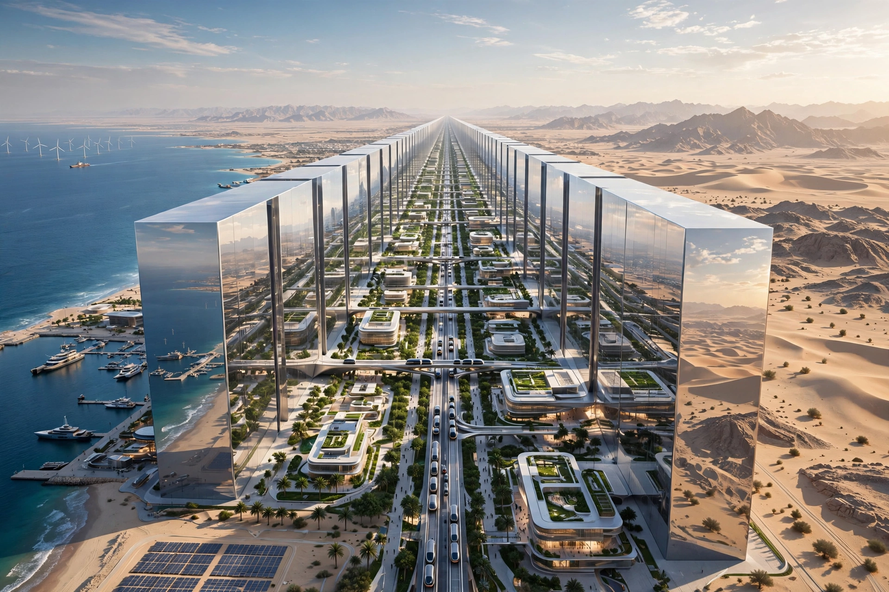

Neom (styled NEOM) is a planned futuristic region in northwestern Saudi Arabia, in Tabuk Province on the Red Sea. Announced in 2017 by Crown Prince Mohammed bin Salman, it is a flagship project of Saudi Vision 2030, intended to diversify the economy away from oil.
The best-known component is The Line, a proposed linear smart city originally conceived as 170 kilometres long, 200 metres wide and 500 metres high, housing up to nine million people with no cars or streets. Other announced districts include Oxagon, an industrial port city; Trojena, a mountain tourism and ski resort planned to host the 2029 Asian Winter Games; Sindalah, a luxury island resort in the Red Sea; and Leyja.
Construction began in the early 2020s. Reports in 2024 indicated The Line's initial phase would be substantially shorter than originally announced by 2030. The project has attracted international architects and consultants, and considerable scepticism about cost, feasibility and timeline.
Human rights groups criticised the displacement of members of the Howeitat tribe from the project area. Environmental and engineering experts have questioned impacts on wildlife, water and climate, and the project's very large cost, estimated in hundreds of billions of dollars.